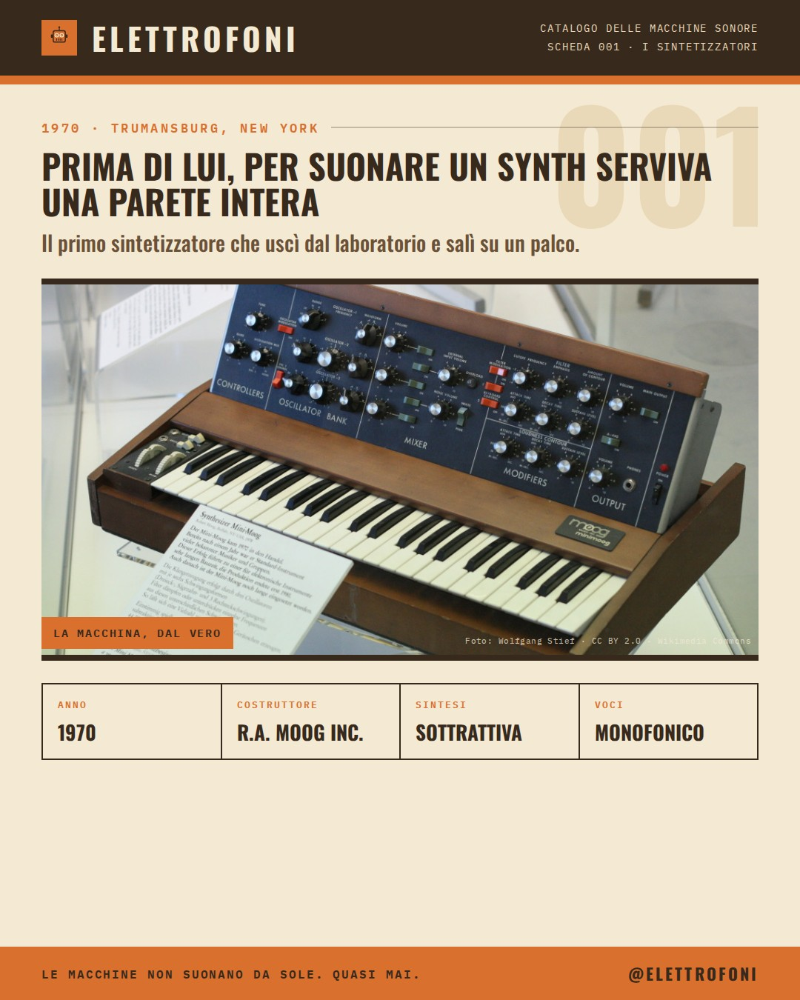

SCHEDA 001 · 1970
Minimoog Model D
Prima di lui, per suonare un synth serviva una parete intera.
Le macchine che hanno cambiato la musica, una scheda alla volta. L'archivio completo delle schede pubblicate.

Prima di lui, per suonare un synth serviva una parete intera.